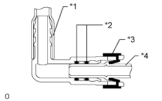

ТОПЛИВНАЯ СИСТЕМА ДВИГАТЕЛЯ > МЕРЫ ПРЕДОСТОРОЖНОСТИ |
| 1.FUEL SYSTEM |
Observe these precautions when disconnecting the fuel tube connector:
Check if there is any dirt like mud on the pipe and around the connector before disconnecting them. Clean the dirt away if necessary.
Disconnect them by your hands.
 |
When the connector and the pipe are stuck, push and pull the connector to free to disconnect and pull it out.
 | Turn |
 | Pull |
|  |
| *1 | Nylon Tube |
| *2 | O-Ring |
| *3 | Retainer |
| *4 | Pipe |
Inspect if there is any dirt or the like on the seal surface of the disconnected pipe. Clean it away if necessary.
Prevent the disconnected pipe and connector from damaging and foreign objects from being mixed into by covering them with a plastic bag.
Observe these precautions when connecting the fuel tube connector (for quick type B):
 |
Match the axis of the connector with the axis of the pipe, and push in the connector until the connector makes a "click" sound. In case that the connection is tight, apply a little amount of new engine oil on the tip of the pipe.
| Push |
After having finished the connection, check if the pipe and the connector are securely connected by pulling them.
| Pull |
Inspect for fuel leak.
Observe these precautions when disconnecting the fuel tank breather tube connector:
  |
Pinch the retainer and pull out the fuel tank breather tube connector with the fuel tank breather tube connector pushed to the pipe side to disconnect the fuel tank breather tube from the pipe.
| *1 | Fuel Tank Breather Tube Connector |
| *2 | Pipe |
| Push |
| Pinch |
| *1 | Fuel Tank Breather Tube Connector |
| *2 | Pipe |
| *3 | Nylon Tube |
| *4 | O-ring |
Observe these precautions when connecting the fuel tank breather tube connector:
 |
Align the fuel tank breather tube connector with the pipe, then push in the fuel tank breather tube connector until the retainer makes a "click" sound to install the fuel tank breather tube to the pipe.
| Push |
 |
After having finished the connection, check if the pipe and the connector are securely connected by pulling them.
| Pull |
Inspect for fuel leak.
| 2.CHECK FOR FUEL LEAK |
Check that there are no fuel leaks after performing maintenance anywhere on the fuel system (See page Нажмите здесь).